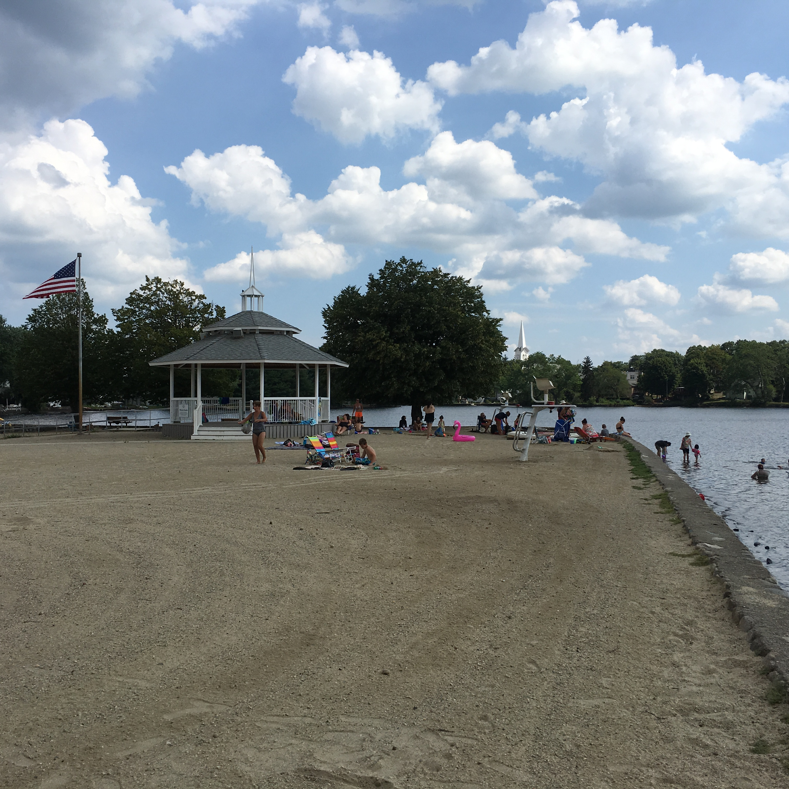
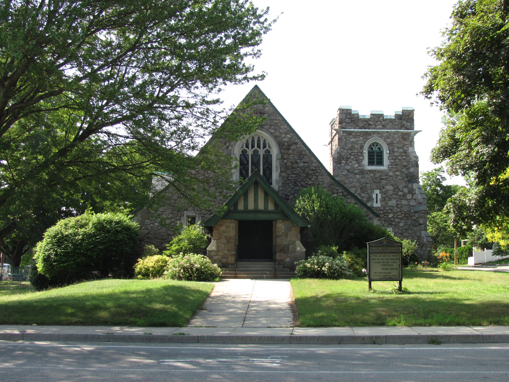

Independent community water quality initiative
We track federal EPA and Massachusetts DEP testing data for the Great Pond Reservoir System and help Braintree families understand what's really coming out of the tap — in plain language, sourced from public records.
Braintree's water comes from the Great Pond Reservoir System, a surface-water supply that has served the town since the 1930s. Water flows from the Upper Reservoir (fed by Narroway Brook) by gravity into the Lower Reservoir and then the Treatment Plant, with the Richardi Reservoir on the Farm River available as a backup source. Surface water like this carries more natural organic matter than a groundwater well, which is why Braintree's plant runs a heavier treatment train — coagulation, filtration, and chlorination — than many neighboring systems, and why chlorine taste can be more noticeable straight from the tap.
EPA's Fifth Unregulated Contaminant Monitoring Rule (UCMR5), run in 2023–2024, found five PFAS "forever chemical" compounds in Braintree's testing results. None of this represents a current EPA violation. But the average PFOA reading over that testing window, 4.7 parts per trillion, sits above the EPA's own individual health-based limit of 4 ppt for that specific compound.
| Compound | Average level (2023–24) | EPA individual limit |
|---|---|---|
| PFOS | 7.6 ppt | 4 ppt |
| PFOA | 4.7 ppt | 4 ppt |
| PFPeA | 4.0 ppt | — |
| PFHxA | 3.7 ppt | — |
| PFBS | 3.0 ppt | — |
Source: EPA UCMR5 occurrence data, 2023–2024, as reported in Braintree's 2025 Consumer Confidence Report. See the full breakdown and methodology on the Water data page.


Braintree Water Watch is a volunteer-run initiative started by residents who wanted a plain-language, independent source for what federal and local testing actually shows about the town's water supply — separate from the utility's own reporting.
We read the Consumer Confidence Reports so you don't have to, track new EPA monitoring data as it's published, and help neighbors figure out whether their household should be doing anything differently — including during the transition to Braintree's new regional treatment plant.
Request a free in-home water test and a volunteer will follow up to walk through what your results mean.
Get a free water test